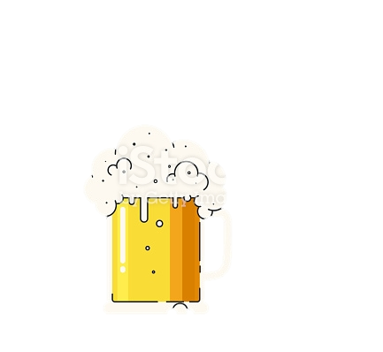

|  | | |
En palabras simples la cerveza es una bebida alcohólica elaborada partir de azucares de cereales
y otros granos, saborizada y aromatizada con lúpulo, que luego son fermentados en agua con levaduras del género Saccharomyces.
No existe un denominador “inventor” de la cerveza, tampoco un pueblo que puede afirmar que bebían cerveza antes que otro,
haber sido el primero en elaborarla y consumirla.